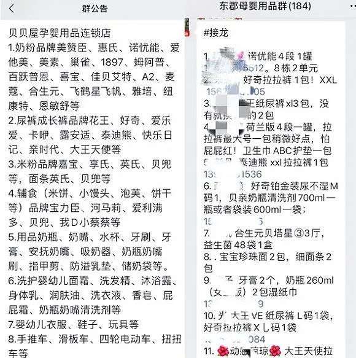
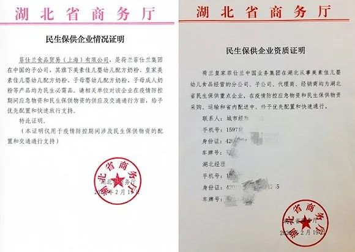

超市婴儿奶粉缺货？湖北省商务厅回应
原文链接 备份链接 澎湃新闻记者 赵实 2月22日下午，湖北省新型冠状病毒肺炎疫情防控工作指挥部召开新闻发布会，介绍全省疫情防控医疗物资和生活物资保障情况。 发布会上，有记者提问，近期有武汉市民反映，婴儿配方奶粉不好买，超市也出现了婴儿配 …
 摄影：蔡星卓
摄影：蔡星卓
记者：赵晓娟 编辑：牙韩翔
“
目前奶粉紧缺的根源在于，从奶粉经销商到母婴店、超市的物流，再到被网格化管理的消费者手中，仍然有物流方面的卡顿。
”
2月23日，一名住在武汉市硚口区的年轻妈妈在微博上求助称，自己的宝宝3个月10天，眼看要断粮，网购速度太慢，她在线下找到的一家母婴店有售宝宝吃的Alra奶粉，但这家母婴店不营业，即便销售人员送货，可是小区目前处于严格管控之下她无法外出，只好在微博上求助。
尹建峰也有许多类似的客人发出求助信息，最近他的角色，从母婴店贝贝屋的合伙人变成了“微商”。
他自己住在武汉金地格林东郡小区，而如今最近的母婴店在4公里之外。但尹建峰发现小区邻居对母婴用品的需求旺盛，在2月9日建立了东郡母婴群。
这个群的群公告里写着，出售美赞臣、诺优能、惠氏、美素佳儿、飞鹤等常见的奶粉品牌，此外包含纸尿裤、婴儿辅食、洗护用品等品项，供群内人员选择购买，2月24日，界面新闻获得该群的一条接龙显示，奶粉和纸尿裤是高频购买产品。

尹建峰的群公告和群内购买接龙
诸如微博上求助者想要买的Alra奶粉，事实上多以进口为主，当下并不好买到。而在尹建峰的客户中，如果一名没有买到诺优能4段的妈妈，可以给孩子替换其他同一段数奶粉，但1段奶粉并不被建议轻易替换，因为6个月内的小婴儿肠胃非常脆弱，可能会存在转奶（更换奶粉）导致的肠胃问题，所以家长们往往不愿意给正在吃1、2段的婴儿转奶。
他们的需求每天以接龙的形式发到群里，尹建峰想办法统筹，店里缺货的会协调贝贝屋其他6个店调配，准备齐全的话当日晚上或次日早上开车至小区内，将货品分发。尹建峰个人因住在格林东郡，拥有小区出入证，才可以快速配送给小区内部这些零星购买的消费者。
但尹建峰的店里，部分货品已经快进不到货了。
“要么是经销商没货了，有一部分是经销商不能送货，”他告诉界面新闻，正常情况下，母婴店把货报给经销商，他们通过第三方物流发过来或者自己送过来。
但是在2月上旬到中旬这段时间，尹建峰进货更为困难，经销商因没有绿色通行证或者人手不够无法送货，都是尹建峰的同事开越野车去经销商位于汉口的仓储中心去拖货。
奶粉产品一直到2月22日才被划入民生保障供应用品之列。
2月22日，湖北省召开新冠肺炎疫情防控新闻发布会，针对婴幼儿奶粉的供应问题，湖北省商务厅厅长秦军称，湖北省目前婴幼儿奶粉的保有量是1600吨，可以满足全省婴幼儿饮用一个月以上。
他介绍，湖北省婴幼儿奶粉的销售方式主要有两种，其中70%的销售是通过专营店销售的，另有30%通过超市来销售。秦军称，前一段时间因为防疫的需求，各家专营店都没有营业，所以导致结构性短缺。发现问题以后，湖北省商务厅及时与湖北的7家大的经销商进行了沟通，将原来以专营店销售方式转变为以超市为主的销售方式，并且加上了线上销售的力度。目前，婴幼儿奶粉不好买的问题基本得到缓解，实现了市场供应不断供。
蒙牛、达能、飞鹤、菲仕兰、贝因美等奶粉企业均向界面新闻表示，目前奶粉供应已经恢复正常，其在湖北的经销商基本可以保障供应。
界面新闻自菲仕兰获取的一份产品民生保供企业资质证明显示，荷兰皇家菲仕兰中国业务集团在湖北从事美素佳儿婴幼儿食品经营的分公司、子公司、代理商、经销商均为湖北省民生保供重点企业，在疫情防控应急物资和民生保供物资采购、运输和省内配送中，给予优先配置和快捷通行。落款单位是湖北省商务厅，时间为2月19日。

菲仕兰供图
相应的经销商可以持资质证明申请绿色通行证。
湖北省婴童用品协会称，截至2月23日，首批767家婴童店店主已经进入绿色通道目录名单。但尹建峰的贝贝屋还不是该协会会员，为此不能通过该协会获得绿色通道。
超市渠道也在努力保障供应。按湖北省商务厅的说法，超市渠道婴儿奶粉销售占比在30%。
盒马鲜生武汉的采购告诉界面新闻，个别奶粉段位供应商确实存在无货情况，他们正在想办法推动厂家、供应商尽早恢复供应。外地供应商目前无法直送武汉，盒马采用内部调拨，例如通过上海、长沙等城市大仓调拨武汉紧缺物资。
此外盒马还引入此前没有引入的奶粉品牌，比如飞鹤已经对接引进。
另一方面，武汉的社区网格化管理越来越严格。以尹建峰所在的金地格林东郡小区为例，16栋楼被划分成4个网购，社区内的购物也基本以网格为单位组织统一购买，开取出入证明同样需要负责网格管理的社区人员，出入小区更为艰难。
目前针对武汉社区封闭式管理的现状，盒马18家门店全部都有社区团购对接。为此，盒马的大部分门店已经不接待个人用户，门店工作人员全部支援线上业务，将原有组织架构全部打散，女生支援打包，男生支援配送，充足线上人力。
此外盒马在配送方面竭尽全力，例如门店有私家车的员工也在支持配送，一些门店志愿者帮助盒马捐出自家公司厢式货车，招募志愿者司机为社区送货。自2月24日开始，武汉市商务局为盒马每家门店支援公交车一辆支持社区配送。
但是超市渠道还不能一蹴而就。尹建峰称，相比于超市渠道，顾客在母婴店购买更多，很多母婴店的销售营业员本身与顾客建有微信服务群，用来咨询、解决售后问题和调换货品等，最近这些微信群起了作用，发快递也基本上是以往累积的顾客资源，通过微信发送需求，贝贝屋再通过快递发出。
尴尬之处就在于，随着网格化管理趋于严格，最后一公里的端与端配送仍然不能通畅。
到2月25日，上述在微博求助的妈妈仍然没有买到奶粉，好在，她收到了蒙牛雅士利捐赠的奶粉产品，至少断粮是不会了。不过她还没有想好要不要在特殊时期转奶。
未经授权 禁止转载

原文链接 备份链接 澎湃新闻记者 赵实 2月22日下午，湖北省新型冠状病毒肺炎疫情防控工作指挥部召开新闻发布会，介绍全省疫情防控医疗物资和生活物资保障情况。 发布会上，有记者提问，近期有武汉市民反映，婴儿配方奶粉不好买，超市也出现了婴儿配 …
原文链接 备份链接 武汉封城已经过去一个月，突如其来的疫情打乱了整座城市的节奏，也在2020年开局给零售市场注入了新的变量。进入武汉不到两年，一共开了18家店的盒马在此期间仍然维持着正常运转。坚守武汉意味着经营层面各个环节都要接受挑战，接 …
原文链接 备份链接 岛语 非常时期，武汉成了全国人民挂念、祈福的城市。封城后，武汉人民的真实生活是什么样？ 正和岛自1月26日起特别推出《叶青：我在武汉疫区的第N天》专栏。叶青是一位定居武汉40年的市民，也是一名学者和官员。接下来的一段时 …
原文链接 备份链接 在疫情发展严重的春节期间，很多外卖员却没有离开岗位。除了不能回家过年，他们还要面对极大的被传染风险。在与疫情的战斗中，这些无名的外卖员也付出了很大的贡献。今天这篇文章就来自一位依然坚守岗位的外卖员，我们也想借此对这位 …
原文链接 备份链接 日常的平淡生活 在如今成为奢侈 1月23日早上6点，家住武汉市江岸区的徐哲，被连续不断的手机振动声吵醒。 各大新闻APP都推送了“武汉封城”的新闻，时隔1个月，徐哲仍然记得那天早上6点钟小区附近二环线上嘈杂的车流 …